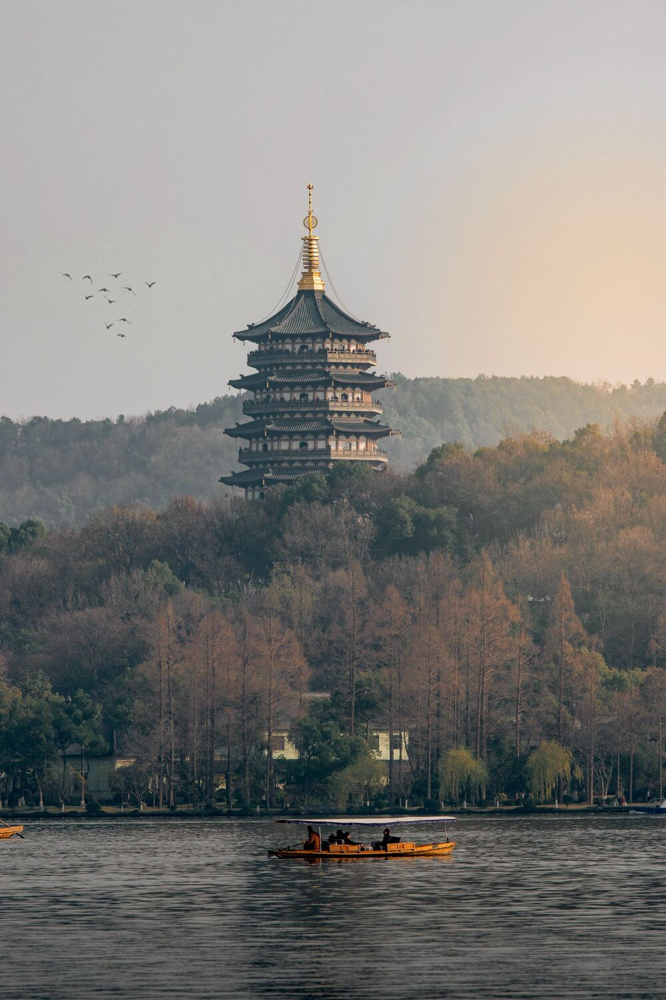

Travel
Bangkok

Geographic Location: Southeast Asia
Bangkok, Thailand's capital, is a large city known for ornate shrines and vibrant street life. It is officially known in Thai as Krung Thep Maha Nakhon and colloquially as Krung Thep.
Bangkok welcomes more visitors than any other city in the world and it doesn't take long to realize why. Bangkok is a city of contrasts with action at every turn. Marvel at the gleaming temples, catch a tuk tuk through bustling Chinatown or take a longtail boat through floating markets. Food is another Bangkok highlight, from local dishes served at humble street stalls to haute cuisine at romantic rooftop restaurants.
Hangzhou

Geographic Location: Asia
Hangzhou, situated in eastern China, is a city that seamlessly blends ancient heritage with natural splendor. At the heart of its allure lies the iconic West Lake, a UNESCO World Heritage Site celebrated for its picturesque landscapes. Here, serene waters mirror the surrounding lush gardens, historic temples, and quaint tea houses, creating a tranquil oasis in the heart of the city. West Lake has been an enduring muse for poets, scholars, and artists for centuries, offering a captivating escape where willow trees gracefully sway, lotus flowers bloom, and visitors can glide across its waters on paddle boats, connecting with the city's deep-rooted love for nature.
Hangzhou is also famous for its Longjing tea, a prized variety of green tea cultivated in the nearby rolling hills. Enthusiasts can partake in traditional tea ceremonies, explore centuries-old tea plantations, and gain insight into the meticulous art of tea production passed down through generations. This rich tea culture, alongside the city's modernity and technological prowess, paints a vivid portrait of Hangzhou—a place where tradition harmonizes with innovation, making it a captivating destination for those seeking a glimpse into China's multifaceted cultural heritage.
London

Geographic Location: United Kingdom
As one of the most iconic cities in the world, London carries a rich history that is matched by its continuous growth and evolution. A powerhouse of culture, politics, and finance, it stands as a city where the past and present exist harmoniously side by side. From the ancient towers that narrate tales of a regal past to modern architectural marvels that reach for the skies, London offers an unrivaled blend of history and modernity.
The expansive London skyline, a blend of the old and new, offers a panoramic view that captures the city's essence, where history meets modernity. The Tower Bridge, a symbol of engineering marvel and historical significance, stretches across the River Thames with its iconic twin towers.
Rome

Geographic Location: Europe
Rome is one of the oldest metropolitan areas in the world. With a history dating back to 700 BC with the birth of the Roman Empire, the city has maintained its status as a cultural and historical hub of Europe. The city is peppered with ancient monuments, statues, and piazzas from different eras of history. The most famous location, the Colosseum, is touted as one of the seven modern wonders of the world. Rome houses several world famous museums, such as the Borghese and the Vatican Museum. It is also the only city in the world to encompass a recognized country, Vatican City.
Rome is also a great location for food, wine, and leisure. At the heart of Italy, Rome is a central gathering place for a diverse array of Italian cuisine; Neapolitan Pizza from the south, Tuscan wine, and truffle from the north. Rome's most famous dish is carbonara. Beyond the food, Rome has a vibrant nightlife. The Trastevere neighborhood has plenty of bars and clubs for patrons and, just over the river, Centro's shopping district is always bustling.